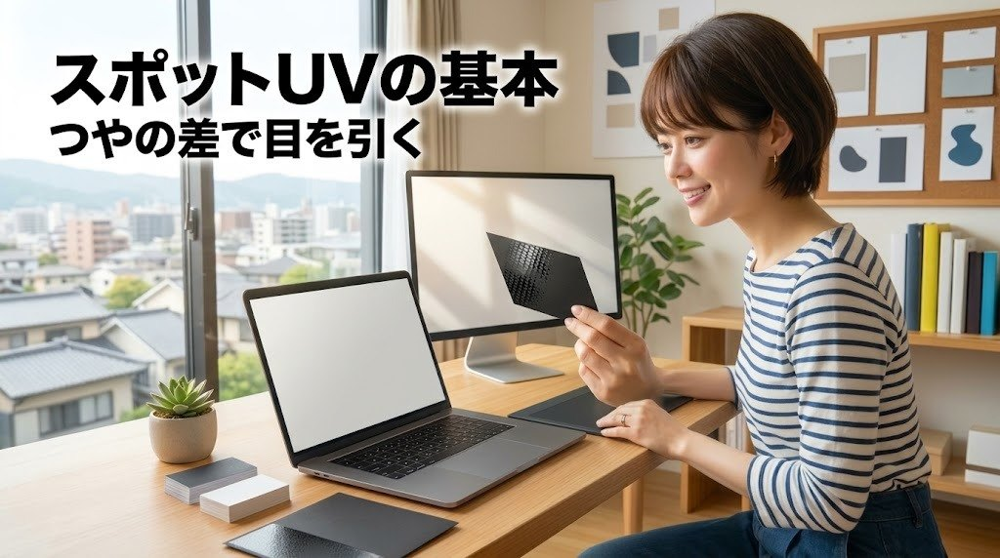

UV加工・スポットUVの基本｜効果とデータ作成の注意

UV加工の仕組みと、スポットUVのデータの作り方が、この記事でひととおりわかります。
UV加工は、紙の上に透明なUVニスを塗り、紫外線を当てて一瞬で固める表面加工です。強いつやが出て、一部分だけに使うスポットUVなら、ロゴや写真を光らせて目を引くことができます。
「名刺やパッケージの一部だけをピカッと光らせたい」と思ったことはありませんか？ その表現を、印刷所で困らないデータで実現するための基本を、順番にまとめました。
UV加工とは？ 紫外線で固める透明なニス
UV加工は、UVニス（紫外線を当てると固まる透明な塗料）を印刷面に塗り、UVランプ（紫外線を出す照明）を当てて硬化させる加工です。UVコーティングと呼ばれることもあります。
ふつうのインキやニスは、空気に触れて乾いたり紙に染み込んだりして、少しずつ固まります。UVニスは紫外線を当てた瞬間に化学反応で固まるため、塗った膜が紙に沈みにくく、表面に厚みのあるなめらかな層として残ります。これが、UV加工ならではの強い光沢の理由です。
UV加工で得られる主な効果は次のとおりです。
- 強いつやが出て、色が鮮やかに見えやすい
- 表面がこすれや汚れに強くなる
- 一部分だけに塗れば、つやの差で模様やロゴを浮かび上がらせられる
- 厚く盛れば、指でなぞってわかる立体感が出る
「つやを足す加工」であると同時に、「つやの差を設計できる加工」でもある、と考えるとデザインに取り入れやすくなります。
全面UV・スポットUV・厚盛りUVの違い
UV加工は、塗る範囲と厚みによって大きく3つに分けて呼ばれることが多いです。呼び方は印刷会社によって少しずつ違うため、発注時は各社の説明もあわせて確認すると安心です。
全面UVは、印刷面の全体にUVニスを塗る加工です。チラシや冊子の表紙、ポストカードなどで、全体をつやつやにして写真を鮮やかに見せたいときに使われます。
部分UV（スポットUV）は、指定した部分にだけUVニスを塗る加工です。ロゴや商品写真など、見せたい部分だけに光沢をつけられます。まわりとのつやの差が生まれるので、同じ色の上でも模様が浮かび上がって見えます。
厚盛りUVは、スポットUVのニスを厚く盛って、手ざわりでわかる盛り上がりをつける加工です。「3Dニス」「厚盛りニス」などと呼ばれることもあります。点字のような凹凸の表現や、ロゴを触って楽しめる名刺などに使われます。
加工の方式も、仕上がりの違いにかかわります。一般的には、次のような分け方で説明されることが多いです。
- オフセット印刷機のインラインUVニス：印刷と同じ流れでニスを塗る方式。全面や広めの範囲に向きやすい
- 専用のコーティング機：印刷後に別の機械で全面にニスを塗る方式
- スクリーン印刷：網目の版からニスを押し出す方式。膜を厚くしやすく、スポットUVや厚盛りでよく使われる
インライン（印刷機の中で印刷とあわせて加工すること）の場合は工程が少なくすみやすく、スクリーン印刷の場合は膜を厚くできる、といった特徴があります。ただし、どの方式を使うかは設備や印刷物によって異なります。厚みや見え方にこだわりたいときは、「どの方式で加工しますか」と印刷会社に聞いてみると、仕上がりのイメージがつかみやすくなります。
ほかの表面加工との比べ方
UV加工は、ほかの表面加工と比べると特徴がつかみやすくなります。表面加工の全体像は表面加工の種類と選び方で詳しく紹介していますので、ここではUV加工を中心に並べます。
| 加工 | 見た目 | 手ざわり | 向く用途 | 注意点 |
|---|---|---|---|---|
| 全面UV | 全体に強い光沢 | つるつる | チラシ、ポストカード、表紙 | 折り目が割れやすい、反りが出ることがある |
| スポットUV | 一部だけ光る | 加工部分がなめらか | 名刺、ショップカード、パッケージ | 位置が少しずれることがある、細い線は苦手 |
| 厚盛りUV | 一部が光って盛り上がる | 指でわかる凹凸 | 名刺、招待状、ロゴの強調 | 工程が増えやすい、細かい形は再現しにくい |
| ニス | 控えめなつや、またはつや消し | 紙に近い | 冊子、チラシ、こすれ対策 | 光沢や保護の力はUVより穏やか |
| PP | 光沢またはマット | フィルムのなめらかさ | 表紙、ショップカード、メニュー | 紙の風合いは隠れる、フィルムを貼るため工程が増える |
ニスは、ここでは油性ニスや水性ニスのような、印刷機で薄く塗るニスを指しています。紙の質感を残しつつ、こすれを防ぎたいときに向いています。
PPは、PP（ポリプロピレン）のフィルムを紙に貼る加工で、ラミネートとも呼ばれます。保護の力が強く、折り曲げにも比較的強いのが特徴です。
あなたの印刷物でいちばん伝えたいのは、「全体の鮮やかさ」でしょうか、それとも「一点の存在感」でしょうか。前者なら全面UVやPP、後者ならスポットUVや厚盛りUVが候補になります。
スポットUVが映える使い方
スポットUVは、光らせる面積を絞るほど効く加工です。全体のあちこちを光らせると、つやの差が生まれず、どこを見てほしいのかが伝わりにくくなります。
効果が出やすい使い方の例です。
- ロゴやシンボルマークだけを光らせる
- 商品写真の商品部分だけを光らせ、背景はつやを抑える
- 同じ色の地に、UVだけで模様やパターンを入れる
- 見出しの一語や、名前の一部だけに使う
- 黒やネイビーなど濃い色の地の上に使い、光の当たり方で浮かび上がらせる
特に定番なのが、マットPP＋スポットUVの組み合わせです。まず全体にマットPPを貼ってつやを消し、その上の一部にUVニスを塗ります。しっとりしたマットの面と、ぴかっと光るUVの面が隣り合うので、つやの差がはっきり出ます。名刺やショップカード、化粧品や食品のパッケージなどで、上品な高級感を出したいときによく選ばれます。
ただし、この組み合わせはPPフィルムとUVニスの相性や設備が関係するため、対応している印刷会社とそうでない会社があります。発注先のメニューにあるかどうかを最初に確かめておくと、デザインの段階で迷いません。
濃い色の地にスポットUVを使うと、正面から見たときより、少し傾けて光を反射させたときに模様が浮かび上がります。この「傾けると見える」演出は、手に取ってもらう名刺やカードと相性がよい使い方です。名刺づくりの全体の流れは、AIで名刺デザインを作って印刷するまでで紹介しています。
同じく手ざわりと光で目を引く加工に、箔押しがあります。金や銀の輝きを使いたい場合は、箔押し加工の基本もあわせて比べてみてください。
加工用データの作り方
スポットUVや厚盛りUVでは、印刷用のデータとは別に、どこにニスを塗るかを指示する加工用データ（版下）を用意するのが一般的です。印刷所はこのデータをもとに、ニスを塗るための版を作ります。
基本の作り方は次のとおりです。
- 印刷データと同じサイズ・同じ塗り足しのドキュメントを用意する
- 加工したい部分だけを、K100（墨ベタ）の塗りで作る
- 加工用データは、別レイヤーまたは別ファイルにまとめる
- 印刷データと加工用データの位置をぴったり重ねる
- 加工しない部分は白（何もない状態）にしておく
K100は、CMYKのうちK（墨・黒）だけを100%にした色のことです。加工用データでは「黒い部分＝ニスを塗る部分」という意味になるため、グレーや網点（色の濃淡を小さな点の大小で表すしくみ）が混ざらないように、ベタ（100%の塗りつぶし）で作るのが基本です。印刷会社によっては、特色スウォッチ（色見本として名前をつけた色）で指定する方法をとることもあるので、入稿ガイドの指定に合わせましょう。
加工部分は、ベクター（点と線で描かれた、拡大しても粗くならないデータ）で作ると、輪郭がきれいに出ます。写真の一部を光らせたい場合も、写真から切り抜いたパスを使って、ベクターの形にしておくと安心です。
次のような形は、加工で再現しにくいことがあります。
- 細い線や、小さい文字
- 細かいグラデーションやぼかし
- 網点やかすれのような、濃淡のある表現
- 線と線の間がとても狭い模様
ニスは液体なので、細すぎる線はつぶれたり途切れたりしやすく、狭いすき間は埋まりやすくなります。また、ニスは「塗るか塗らないか」の2択なので、グラデーションのような中間の濃さは表現できません。最小の線幅や文字サイズの目安は印刷会社ごとに決められていることが多いので、入稿ガイドを確認してみてください。
もうひとつ大切なのが、見当ズレ（印刷と加工の位置がわずかにずれること）への備えです。印刷と加工は別の工程で行われることが多く、紙の伸び縮みや機械の精度によって、ほんの少し位置がずれることがあります。
そのため、写真の輪郭にぴったり合わせすぎないのがコツです。
- 写真の輪郭より、少し内側にニスの範囲を収める
- ロゴを光らせるときは、ロゴの形そのものを加工範囲にし、背景との境目を目立たせない
- ずれても目立ちにくいよう、模様やパターンはゆとりのある配置にする
「少しずれても気にならないデザイン」にしておくと、仕上がりへの不安がぐっと減ります。
紙・折り・仕上がりの注意
UV加工は、紙の種類や加工の位置によって、仕上がりが変わることがあります。
紙との相性では、表面がなめらかなコート紙（表面に塗料を塗って平らにした紙）やアート紙は、ニスが紙に染み込みにくく、つやが出やすい傾向があります。一方で、上質紙のような非塗工紙（表面を塗っていない紙）や、ざらっとしたファンシーペーパーは、ニスが染み込みやすく、思ったほど光らないことがあります。風合いのある紙で使いたい場合は、印刷会社に相談したり、見本を取り寄せたりすると確実です。紙の基本はデザイナーが知っておきたい印刷の基本でも紹介しています。
UVの割れにも気をつけたいところです。UVニスは固まると硬い膜になるため、折り加工やスジ入れ（折りやすくするために紙に筋をつける加工）の部分で、膜がひび割れることがあります。
- 折り位置やスジ入れの位置には、UVをかけない
- 加工範囲を、折り線から少し離して配置する
- 全面UVの印刷物を折る場合は、対応方法を印刷会社に確認する
全面UVの仕上がりでは、紙の片面だけに厚い膜ができるため、印刷物が反りやすくなることがあります。また、表面に光沢が出ることで、色が濃く・鮮やかに見えることもあります。色の見え方を重視する場合は、少部数で試してから本番に進むと安心です。
書き込みや後加工にも影響します。UVをかけた面は、ボールペンや鉛筆で書きにくかったり、スタンプのインキが乾きにくかったりすることがあります。名刺の裏にメモを書く予定がある場合や、のり付け・箔押しなど別の加工を重ねる場合は、どの面にどの順番で加工するかを事前に相談しておきましょう。
費用と納期は、加工を加えるぶん、版を作る工程や加工の工程が増えるため、通常の印刷より上がり、日数もかかるのが一般的です。特にスポットUVや厚盛りUVは、加工用の版が別に必要になります。具体的な金額や日数はサービスや部数によって大きく変わるので、発注先の見積もりで確かめてください。
入稿前のチェック
データができたら、次の表で確認してみましょう。
| 確認すること | 見るポイント |
|---|---|
| サイズ | 加工用データが、印刷データと同じサイズ・同じ塗り足しになっているか |
| 色の指定 | 加工部分がK100のベタ（または印刷会社が指定する色）になっているか |
| 濃淡 | グレーやグラデーション、網点が混ざっていないか |
| 形 | 加工部分がベクターで、輪郭がきれいか |
| 位置 | 印刷データと加工用データがぴったり重なっているか |
| 細かさ | 線の細さ・文字の大きさが、印刷会社の目安を下回っていないか |
| ズレ対策 | 写真の輪郭に合わせすぎず、少し内側に収めているか |
| 折り位置 | 折り線やスジ入れの位置にUVがかかっていないか |
| 紙 | 選んだ紙が、UV加工に向いているか確認したか |
| ファイル | レイヤー名やファイル名で、加工用データだとわかるようになっているか |
ファイル名に「印刷用」「スポットUV用」のように用途を入れておくと、印刷所の担当者も取り違えにくくなります。入稿方法は会社ごとに違うため、最後に入稿ガイドとあわせて見直しておくと、やり取りがスムーズになります。

まとめ
UV加工は、紫外線で固まるUVニスを塗って、強いつやと表面の強さを加える加工です。全体に塗る全面UV、一部だけに塗るスポットUV、厚く盛って手ざわりをつける厚盛りUVがあり、面積を絞るほどつやの差が際立ちます。マットPPとスポットUVの組み合わせは、上品な高級感を出したいときの定番です。
データは、印刷データと同じサイズで、加工部分だけをK100のベタ・ベクターで別に作り、位置を合わせます。細い線やグラデーションは避け、見当ズレを見込んで少し内側に収めると、仕上がりが安定します。紙との相性や折り位置の割れ、全面UVの反りなども、事前に印刷会社と確認しておくと安心です。
まずは手元にある名刺やパッケージを光にかざして、どこにUVが使われているか探してみませんか？ あなたなら、自分の印刷物のどの一点を光らせてみたいですか？
読んだ内容から、まず1つだけ試してみませんか。今日、プロンプトを1行書いて画像を1枚作るだけでも、立派な一歩です。
あなたなら、まず何から作ってみますか？
最後まで読んでくださり、ありがとうございました。